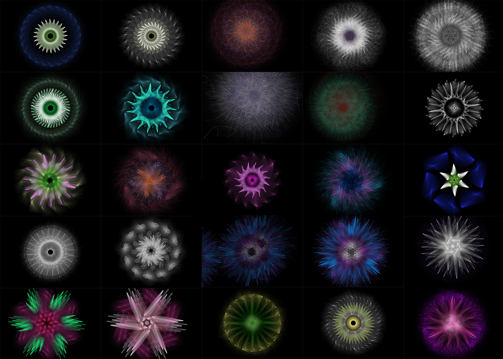
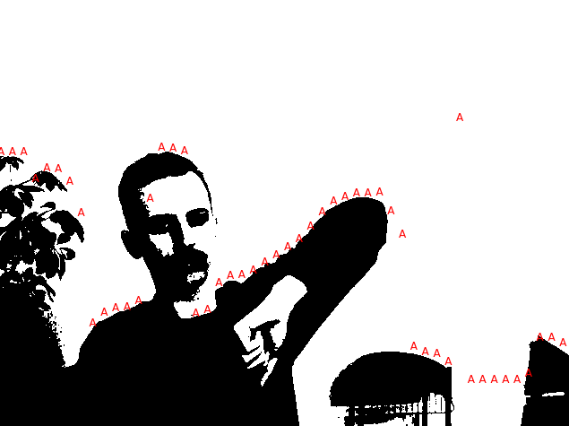
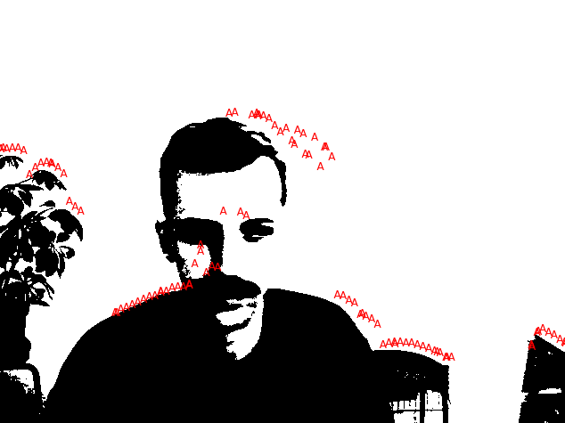

HW_ Week 6
Lillian B:
I’m adding this early because I have to travel this week and miss class. Consequently, I had to stick to something easy and manageable due to shortened time to work on this. I did image averaging, with an assist by Edgardo’s code and with Hind’s help! I have easy access to cats and a cat cam, so first I averaged my cat, Beans, who is always just sort of flopping about, so this “Average Beans”, made from 32 images. Live code here.

This image represents an “average night”, via the cat cam. You can see ghostly figures of the cats, who move about all night. I was hoping that the brightness of their eyes would come out more, but they are detectable as cats. Live code here.
Yadira S:

Moving electro yo in my pueblo - crossing the street home
Shen-Shen W:

Mau.

Jenna Murphy

Ladan B:
I took a number of pictures at the beginning of the pandemic lockdown in the US (around March 2020). The pictures are sunsets I viewed during that time. The image below is made up of 9 images.

Mathhis G:
Matthis: Text Rain - Camille Utterback => Live Code (works best with backlit figure) My code definitely needs a refactor.
Original:
Recreation:

